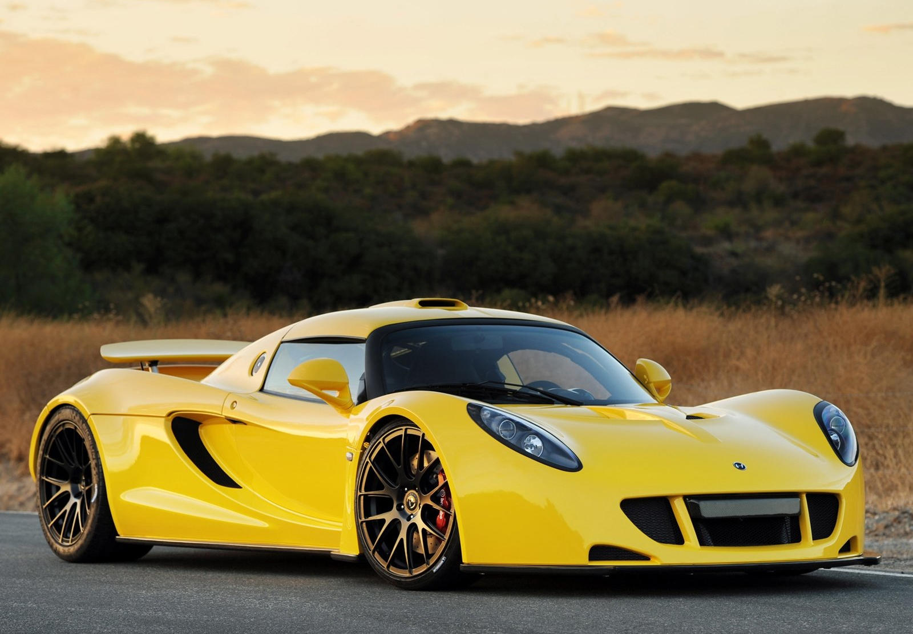

| 3 |
Rolls Royce Ghost |
 |
The Rolls-Royce Ghost is a full-sized luxury car manufactured by Rolls-Royce Motor Cars. The "Ghost" nameplate, named in honour of the Silver Ghost, a car first produced in 1906, was announced in April 2009 at the Auto Shanghai show. |
KNOW MORE
|
| 1 |
Bugatti Chiron Super Sport 300+ |
 |
To mark the sensational record-breaking run that exceeded the magical threshold of 300 miles (482,80 km) per hour for the first time, Bugatti proudly presents the Chiron Super Sport 300+. Limited to 30 units, this very special edition of the Chiron is visually and technically inspired by the record-breaking vehicle.
|
KNOW MORE
|
| 2 |
Hennessey Venom F5 |
 |
The Hennessey Venom F5 is an upcoming high-performance sports car manufactured by the American vehicle-manufacturing company Hennessey Special Vehicles which was established in 2017 |
KNOW MORE
|